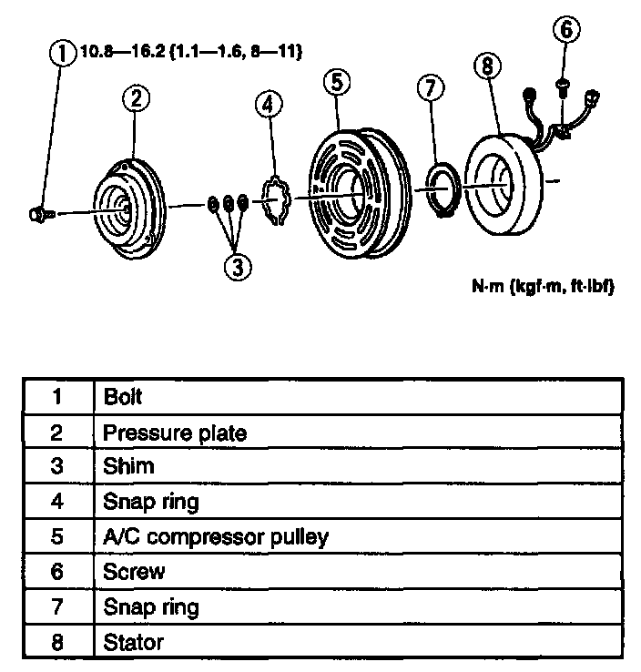
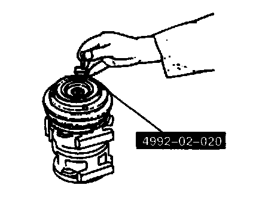

Compressor Clutch: Service and Repair
MAGNETIC CLUTCH DISASSEMBLY/ASSEMBLY1. Remove the A/C compressor.

2. Disassemble in the order indicated in the table.
3. Assemble in the reverse order of disassembly.
4. Adjust the magnetic clutch clearance.

Bolt Disassembly Note
- Remove the bolt by using the SST.

Pressure Plate Disassembly Note
- Remove the pressure plate by using the SST.